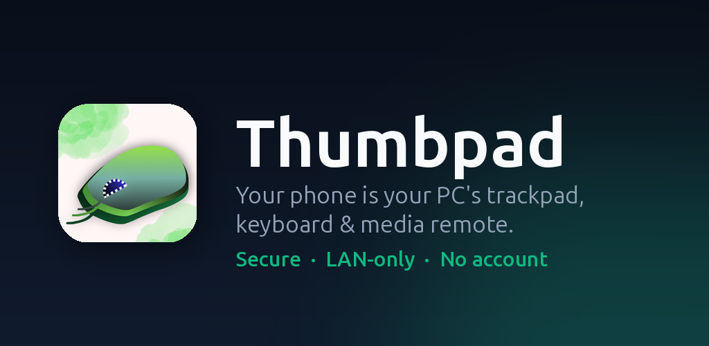
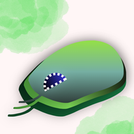

Android
Thumbpad
Use your Android phone as a trackpad, keyboard, and media remote for a Windows PC over your home Wi-Fi.
Needs the free Windows app on your PC: Download for Windows
Software Engineer & Computer Engineer
Tekirdağ, Türkiye
Software engineer and computer engineer specializing in high-performance embedded, client/server, and machine-vision systems. I build and optimize reliable software in C/C++ and Python, with hands-on experience increasing asynchronous I/O throughput, freeing CPU capacity for core algorithms, and integrating technologies across USB, FPGA, image sensors, and desktop applications. With additional expertise in debugging, system-level programming, computer vision, and AI, I bring a practical, performance-focused approach to complex engineering challenges.


Android
Use your Android phone as a trackpad, keyboard, and media remote for a Windows PC over your home Wi-Fi.
Needs the free Windows app on your PC: Download for Windows